Horlogerie · 2023 · Arc jurassien, Tessin
Swiss Knowhow – Horlogerie 2023 : la sous-traitance horlogère
Édition de février 2023 consacrée à la sous-traitance horlogère, placée sous le titre « Une année formidable ». Le numéro donne la parole aux principales organisations de la branche (FH, EPHJ, CPIH, apiah, SSC, ASRH, AQC), présente une quarantaine de sous-traitants de l'Arc jurassien et consacre un cahier au savoir-faire tessinois avec l'association ATIO et plusieurs entreprises du Sud des Alpes.
Sommaire · 37 articles

L'horlogerie suisse est une industrie solide
Interview de Jean-Daniel Pasche, président de la Fédération de l'industrie horlogère suisse FH
EPHJ – « Le salon est encore là pour longtemps ! »
Interview d'Alexandre Catton, directeur du Salon EPHJ
 Interview
InterviewTrouver du personnel : un défi pour la branche horlogère
Interview de Ludovic Voillat, secrétaire général de la CPIH
apiah – À l'aube de nouvelles négociations pour la future CCT
Interview de Séverine Favre, secrétaire générale de l'apiah
SSC Société Suisse de Chronométrie – Vers davantage de communication et de rencontres
Interview de Michel Fazzone, président de la Société Suisse de Chronométrie
ASRH – Une étude pour usiner correctement le laiton sans plomb
Interview de Fabienne Marquis Weible, directrice de l'ASRH
 Interview
InterviewAQC – Un test rapide pour déceler la présence de chrome (VI) dans le cuir
Interview de Gwénaëlle Hildebrand, directrice de l'AQC
A. AUBRY AG – 45 ans de savoir-faire dans l'industrie des plastiques
Joints d'horlogerie et microcomposants plastiques
ArteCad SA – Innovation, savoir-faire, qualité
Manufacture de cadrans à Tramelan
BROQUET DÉCOLLETAGE SA – Précision au service de la haute horlogerie
Micro-pièces décolletées à Bévilard
PROMOTION GROUP – Un savoir-faire qui fêtera en 2023 : 45 ans d'existence !
Bracelets métal et habillage horloger
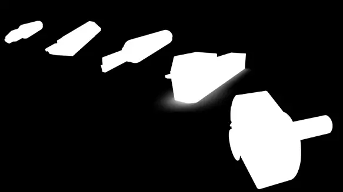
PublireportageDemant SA – 70 ans d'expertise dans l'outil diamant
Outils diamant pour finitions poli-miroir
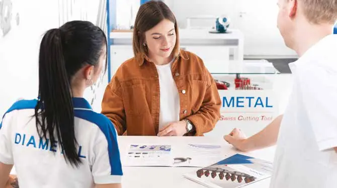
PublireportageDIAMETAL GROUP – Des outillages de précision appropriés
Abrasifs, outils de coupe et pièces d'usure
DHVJ SA – Spécialistes de l'anglage et autres décorations horlogères
Décoration horlogère à la main à la vallée de Joux
MADE IN'ART SA – Le décolletage haut de gamme
Pièces squelettées pour la haute horlogerie
GIL SERTISSAGE SA – Compétences uniques et brevetées
Sertissage de diamants et pierres pour l'horlogerie
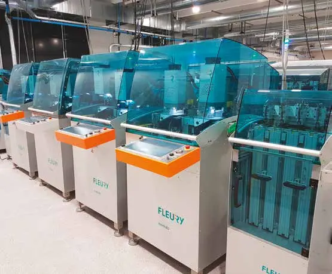
PublireportageFLEURY SA – Doublement de la production en sous-traitance
Lignes de transfert modulaires et ébauches
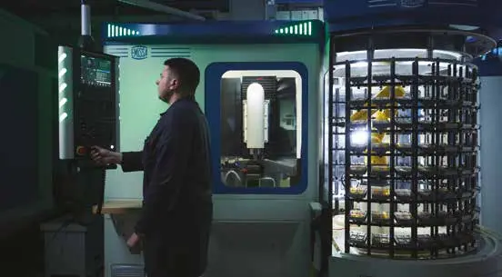
PublireportageINHOTEC SA – La manufacture au service de la précision
Composants et ébauches pour la haute horlogerie
LEATHERTIME – Raffinement et qualité pour protéger vos montres
Maroquinerie de luxe pour l'horlogerie
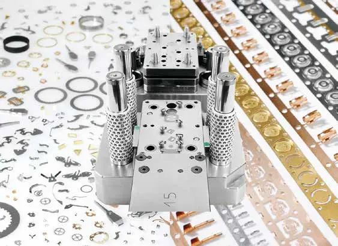
PublireportageMEYLAN FRÈRES SA – Experts de l'étampage progressif de précision
Cinquante ans d'étampage au Brassus
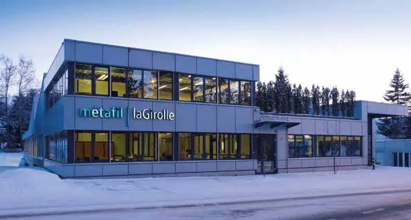
PublireportageMETAFIL - LA GIROLLE SA – Des décolleteuses 100 % Swiss made
Décolleteuses MTF et sous-traitance mécanique à Lajoux

MULLER MACHINES SA – Le paradis de la machine-outil d'occasion
Machines d'occasion et Centre Muller
Oesch GmbH – Spécialiste des boucles et fermoirs de qualité
Distribution d'accessoires pour bracelets
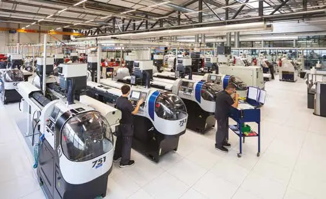
PublireportagePOLYDEC SA – Décolleteurs de l'infiniment petit
Micro-décolletage à Bienne
PROTOFIL SÀRL – Précision et complexité au bout du fil
Électroérosion à fil et micro-usinage à la vallée de Joux
RESSORTS INDUSTRIELS SA – Des ressorts de haute précision jusque dans les mouvements à complication
Petits ressorts de précision à Courgenay
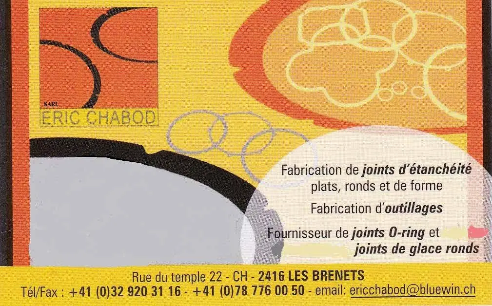
PublireportageROLLOMATIC – Machines laser pour les outils de l'excellence horlogère
Affûtage et découpe laser d'outils coupants
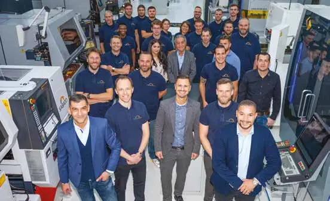
PublireportageSABATO GROUP – Conventionnel ou laser, le meilleur de l'usinage
Usinage de haute précision à Bienne
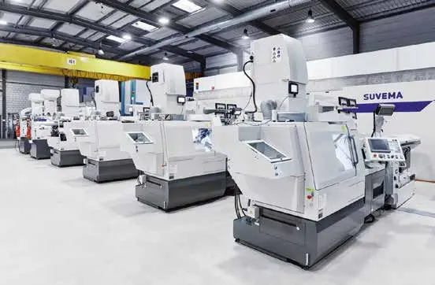
PublireportageSUVEMA SA – Pionniers suisses de la fabrication CNC
Équipements de production CNC depuis 1974
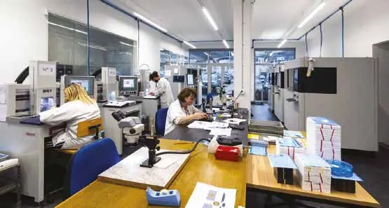
PublireportageSTOCO SA – Partenaires des manufactures pour le pré-assemblage
Garnissage, empierrage et machines T0
TIMSAPH SA – Le saphir synthétique 100 % suisse
Production de saphir synthétique à Delémont
 Interview
InterviewL'ATIO – Point de repère depuis 2014
Interview d'Angelo Piritore et d'Alessandro Recalcati, coprésidents de l'ATIO
FRIEDEN et le Swiss Made depuis 1919 – Saphirs et rubis de haute précision
Traitement de pierres synthétiques à Balerna
ECOMETAL – Une entreprise efficace et dynamique depuis 15 ans
Récupération des métaux précieux
SYC MONTRES SA – La meilleure adresse pour des montres complètes
Conception et fourniture horlogère au Tessin
Rudolf Brügger SA – Leader dans le domaine des composants micromécaniques
Haute précision dans les matériaux extra-durs
MONTRELUX – Professionnalisme, qualité et flexibilité
Assemblage et personnalisation de montres-bracelets de haute qualité
Entreprises de ce numéro · 45
A. Aubry AG
Pièces plastiques de haute précision

Aiguilla SA
Fabrication d’aiguilles de montres
apiah – Association patronale des industries de l'Arc horloger
Association patronale
AQC – Association pour l'assurance Qualité des fabricants de bracelets Cuir
Conformité chimique des matériaux

ArteCad SA
Fabrication de cadrans et d'appliques
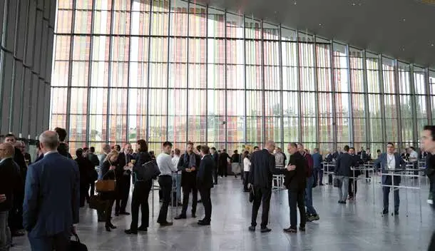
ASRH – Association Suisse pour la Recherche Horlogère
Recherche horlogère communautaire
ATIO – Associazione Ticinese Industria Orologiera
Association de l'industrie horlogère tessinoise
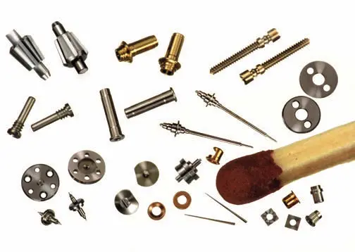
Beauregard Manufacture SA
Habillage horloger et bracelets métal

Broquet Décolletage SA
Décolletage de précision
Centre de formation horlogère (CFO – Centro di formazione orologiero)
Centre de formation et de reconversion horlogère

Centre Muller
Musée de la machine-outil et salle événementielle
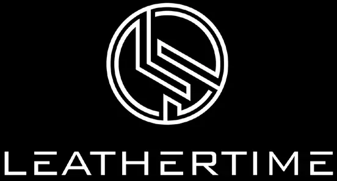
Chatelain Prototypes
Outillage horloger (potences, assistance au sertissage)

Convention patronale de l'industrie horlogère suisse (CPIH)
Organisation patronale et partenaire social
Cyberis
Barrettes de bracelets haut de gamme
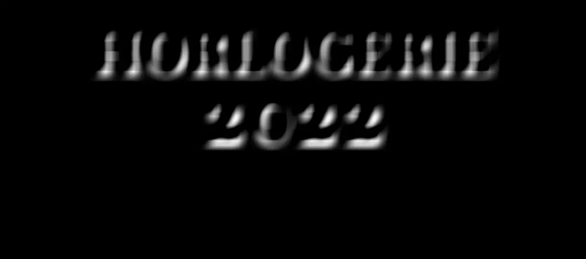
Demant SA
Outils diamant de haute précision
DHVJ SA (Décoration horlogère Vallée de Joux)
Anglage et décorations horlogères à la main
DIAMETAL Group
Outils de coupe, abrasifs et pièces d'usure
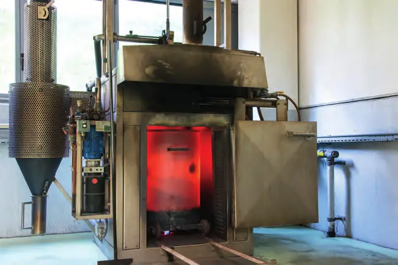
Ecometal SA
Récupération et traitement des métaux précieux

EPHJ – Salon international de la haute précision
Salon professionnel
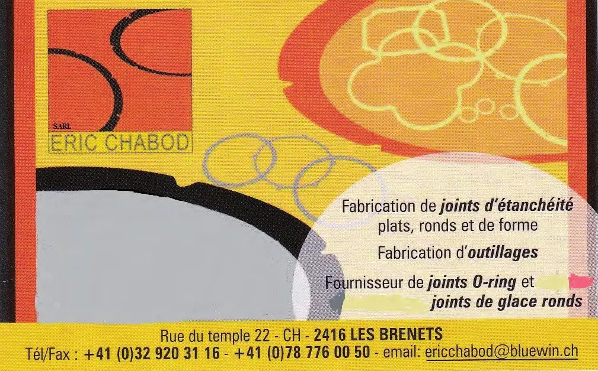
Eric Chabod

Fédération de l'industrie horlogère suisse FH
Association faîtière de l'industrie horlogère
Fleury SA
Lignes de transfert modulaires et sous-traitance d'ébauches
FRIEDEN SA
Pierres saphir et rubis de haute précision
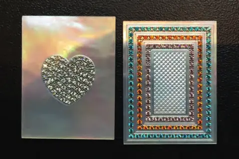
GIL SERTISSAGE SA
Sertissage de pierres et diamants
INHOTEC SA
Composants et ébauches horlogers

Leathertime Sàrl
Maroquinerie de luxe (écrins, coffrets)
MADE IN'ART SA
Décolletage haut de gamme
Métafil-La Girolle SA
Décolleteuses CNC et usinage de précision
Meylan Frères SA
Étampage progressif de précision
Montrelux SA
Assemblage et personnalisation de montres

Muller Machines SA
Commerce de machines-outils d'occasion
Musée international d'horlogerie (MIH)
Musée
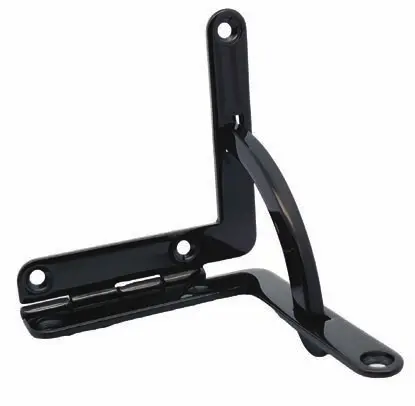
Oesch GmbH
Distribution d'accessoires métalliques pour bracelets cuir et écrins
Pibor Iso SA
Composants horlogers
Polydec SA
Micro-décolletage

Protofil Sàrl
Électroérosion à fil et micro-usinage

Ressorts Industriels SA (RISA)
Ressorts de haute précision
ROLLOMATIC SA
Machines d'affûtage et de découpe laser
Rudolf Brügger SA
Composants micromécaniques en matériaux extra-durs
Sabato Group
Micromécanique, usinage laser et composants horlogers
Société Suisse de Chronométrie (SSC)
Organisation professionnelle horlogère
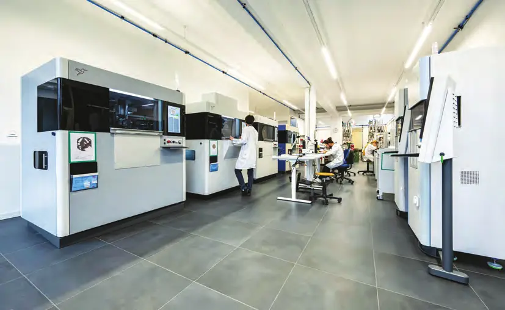
STOCO SA
Machines et sous-traitance de pré-assemblage horloger (T0)
SUVEMA SA
Machines-outils CNC
SYC MONTRES SA
Conception et fourniture de montres complètes et composants

TIMSAPH SA
Production de saphir synthétique
Aucun résultat.